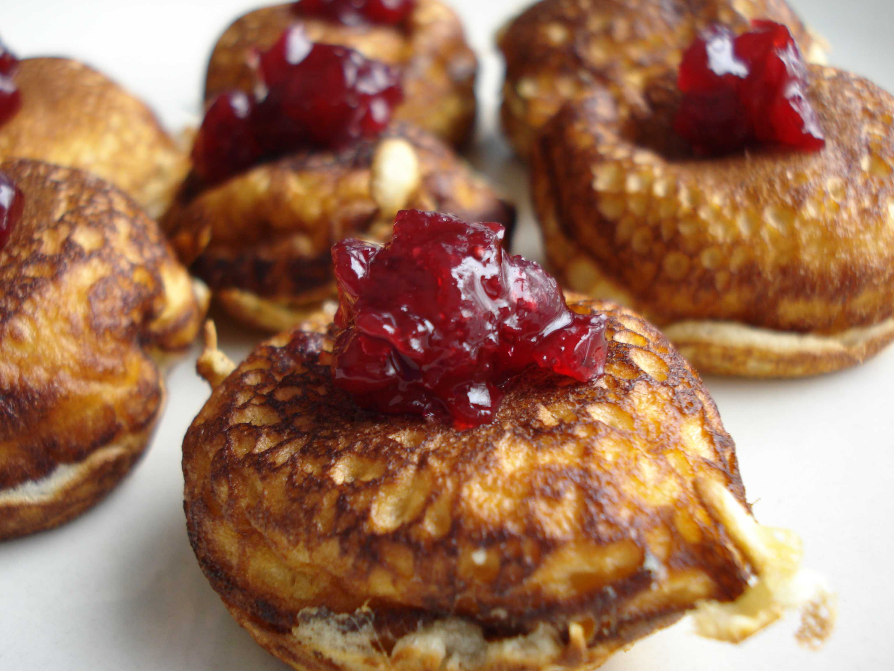

Man Sees Golfer On Danish, Bets Dough On Him To Win

By: Tiger Would
Success is sweet, but can a sweet predict success? Or will this gambler get his just desserts?
A college lecturer in Andover, United Kingdom, reportedly saw what he believed to be the face of golfer Rory McIlroy on a cheese Danish and bet $1,700 on him to win the Masters. "It’s got to be a sign -- Rory’s face on a piece of food from his girlfriend’s home country," Rob Price told British news site The Independent. "My mates had a giggle and think I’m mad, but if I pocket [$20,000], I’ll be the one laughing." Prior to the tournement Price tweeted news of his wager and posted a picture of confection.
In the end nothing could be cruller: McIlroy finished eighth at the Masters and Price was toast. His girlfriend ventured there were several things $1,700 might better have been spent on than an ill-considered pastry play.
Mystery of Holes in Swiss Cheese Cracked After a Century

By: Borden Drousy
Eureka! After about a century of research, Swiss scientists have finally cracked the mystery of the holes in Swiss cheese.
Despite what you may have been told as a child, they are not caused by mice nibbling away inside cheese wheels. Experts from Agroscope, a Swiss centre for agricultural research, say the phenomenon -- which marks famous Swiss cheeses such as Emmental and Appenzell -- is caused by tiny bits of hay present in the milk and not bacteria as previously thought.
They found that the mystery holes in such cheeses became smaller or disappeared when milk used for cheese-making was extracted using modern methods. "It's the disappearance of the traditional bucket" used during milking that caused the difference, said Agroscope spokesman I.M. Shirley Wright, adding that bits of hay fell into it and then eventually cause the holes.